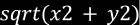

Signed Distance Functions
Che cosa sono?
SDF è l’acronimo di signed distance function. Queste funzioni matematiche e geometriche permettono di ottenere risultati visivi davvero sorprendenti.
Ma prima di capire che cos’ è una SDF dobbiamo prima specificare che cosa significa comunemente misurare la distanza e che differenza c’è con la misurazione della distanza nelle SDF.
Misurare la Distanza
“La lunghezza del tratto di linea retta (nell’ordinario spazio euclideo, altrimenti del tratto di geodetica)
che congiunge due punti (e che si identifica col concetto del minimo percorso tra questi)”. - Definizione di distanza secondo Treccani
Matematicamente la distanza è un valore dato dalla differenza di posizione tra due punti.
Bisogna però chiarire perché le SDF siano nominate come “signed” cioè, con segno (-). Come fa una distanza ad essere negativa e non un valore assoluto?
La distanza nelle SDF
In una funzione SDF, il punto da cui si misura la distanza può essere all’esterno di uno spazio definito e quindi essere positivo,
appartenere ad uno spazio definito e quindi a distanza zero, o all’interno di uno spazio definito e quindi negativo.
Da qui la parola “signed”.
È un concetto curioso, perché fisicamente si potrà essere distanti 1m da un muro, ma non si potrà mai essere distanti 0 o tanto meno all’interno come se si fosse distanti -1m dal muro.
Per capire meglio questo concetto quindi lo si può immaginare come la propria posizione rispetto ad una stanza: si può essere distanti 1m da una stanza, ed essere fuori. Essere distanti 0 metri da una stanza, ed essere sulla porta, essere distanti -1 dalla stanza ed esserne all’interno.
Questo è un laboratorio interattivo sulla distanza nelle SDF, il raggio del cerchio giallo corrisponde alla distanza dal centro del cerchio bianco meno il suo raggio
Disegnare usando la distanza
Cosa vuol dire ottenere risultati visivi utilizzando la distanza, e come farlo concretamente?
Per capirlo bisogna costruire una griglia di pixel simulati, (ad esempio disegnando ripetutamente con dei cicli for la forma rect in p5.js).
Ora per disegnare la distanza si potrà semplicemente passare le coordinate dei pixel inserendole nella funzione di riempimento.
Il risultato visivo dovrebbe essere abbastanza intuitivo, man mano che un pixel si allontana dallo 0 sull’ asse delle x sarà sempre più bianco. È effettivamente la posizione e quindi la distanza di un pixel da un certo punto che ne determina il suo colore.
Modellare le distanze
Avendo capito che la distanza di un pixel da un punto o la sua posizione possono modificarne il colore, si può provare a modellare la formula della distanza per ottenere effetti diversi. Se prima il colore era definito dalle coordinate di x (arbitrariamente), applicando il teorema di pitagora possiamo ottenere un gradiente ,per ora, semicircolare.
Un altro aspetto assolutamente fondamentale da chiarire sono le coordinate della griglia di pixel simulati.
Le SDF sono funzioni puramente matematiche che descrivono delle forme utilizzando la distanza. è proprio per questo che avere coordinate normalizzate
(tipicamente da -1 a 1 con 0 al centro) è fondamentale. Perché consente di effettuare misurazioni in una scala universale e indipendente dalla qualità
della risoluzione (la stessa distanza può essere incredibilmente diversa con 10 o 10.000 pixel). Non normalizzare il piano in cui operano le funzioni
sarebbe come cercare di misurare un campo da calcio non sapendo se si stanno usando i metri o in centimetri.
Un altro aspetto cruciale è la semplificazione
delle formule matematiche delle funzioni.
Dopo aver normalizzato la griglia si può vedere che ora il gradiente appare completamente circolare (traslando il piano lo abbiamo si è solo reso visibile).
Si deduce quindi che con teorema di pitagora possiamo calcolare la distanza circolarmente rispetto ad ogni punto intorno all’origine

Allora la forma allora è vincolata all’origine? Teoricamente si ma quello che avviene durante la compilazione del codice è
un test su ogni pixel della griglia rispetto al punto stabilito per definire se rientra nella funzione di distanza che si sta
usando. Per cambiare questo punto si possono sommare o sottrarre dei valori spostandolo sulla griglia, si trasla così ogni valore
di riempimento rispetto al nuovo punto.
La visualizzazione del cerchio vista subito sopra non è ancora una SDF ma è un gradiente circolare disegnato con il valore
della distanza dal centro, siccome tutti i valori si definiscono allontanandosi dall’origine normalizzata del piano. Ma come già
detto la definizione implica che una funzione “signed” restituisca valori negativi al suo interno uguali a 0 sul perimetro e
positivi all’esterno, modellando ancora il gradiente iniziale si può ottenere una vera SDF di un cerchio, spostando lo 0 dall’origine
a tutto il perimetro, ed effettivamente “creando” la forma, che è oltretutto la più semplice dato che ogni punto è equidistante dal centro.
Il fatto che questa visualizzazione sia comunque bianca all’interno della forma non è dato dal fatto che i valori interni sono
positivi, ma è una necessità per visualizzare il confine, che se riempito di valori negativi (nero) ostacolerebbe questa spiegazione.
Cambiare la visualizzazione
I campi visualizzati prima possono essere racchiusi in una soglia, bisogna dire al programma di disegnare solo oltre un punto stabilito e fino ad un altro punto stabilito. Il tutto chiaramente è arbitrario, si sta solo cambiando la modalità di visualizzazione a seconda delle intenzioni.
Disegnare altre forme
Sapendo come disegnare una forma e come muoverla viene da chiedersi quali altre forme si possano ottenere. La risposta è praticamente qualsiasi, la difficoltà sta nel capire le
formule.
Ma andando per ordine subito dopo il cerchio si può passare al quadrato o rettangolo. Se per il cerchio ogni punto era equidistante dal centro, per il rettangolo le cose si complicano.
Vedendo il rettangolo si pone un altro problema, non si può disegnare ruotato? La risposta è si, come per la traslazione di cui si è parlato prima bisogna aggiungere o sottrarre un valore di rotazione alle coordinate del centro del rettangolo. Per farlo si può utilizzare una matrice di rotazione.
Operazioni booleane
Unione, sottrazione, intersezione sono le combinazioni elementari tra due forme primitive che si possono realizzare. Corrispondono alle operazioni booleane di base. Questi metodi di fusione con le funzioni SDF sono uno strumento estremamente potente, poiché permettono di costruire forme composte complesse senza la necessità di gestire o generare nuovi parametri geometrici che sono invece creati dalle normali operazioni booleane sulla geometria esplicita.
Quando si modella con software che utilizzano geometrie esplicite (come Blender), dove le forme sono definite da vertici
e facce con coordinate precise, unire più forme è un processo computazionalmente “costoso”, perché il software deve calcolare
con precisione le intersezioni tra le superfici e generare nuove coordinate per i vertici e gli spigoli risultanti.
operazioni oltretutto non hanno una qualità geometrica ottimale. Le operazioni poi sono nette e rendono molto più laboriose le trasformazioni dinamiche.
Al contrario, applicando le operazioni booleane alle funzioni SDF non si manipolano coordinate di vertici ma direttamente le
funzioni matematiche che descrivono le forme. Questo significa ridurre il carico di calcoli nel processo di definizione della
forma e consente una manovrabilità e flessibilità nettamente maggiori.
Quando si applica un’ operazione booleana a due forme disegnate con SDF, il risultato dell’operazione sarà un’ unica
nuova funzione SDF che descrive la forma risultante in un nuovo campo di distanza. Come mettere insieme due “ricette matematiche”
per ricavarne una unitaria.
È fondamentale avere chiaro che affinché le operazioni booleane tra due forme funzionino, queste non devono essere necessariamente tangenti o intersecate visivamente, La SDF risultante dalle operazioni infatti, è sempre un’unica funzione che descrive le distanze di ogni punto dalla forma che si è creata, unendo, sottraendo o intersecando le forme, a prescindere dal fatto che sia costituita da due forme unite o distanti.
E se le forme sono più di due? Le formule rimangono invariate?
La risposta è no e risiede nel fatto che le operazioni
booleane sono per loro natura funzioni binarie, cioè prendono sempre due elementi e ne elaborano un risultato unitario
(due input un output). Quindi se si vuole operare tra più di due forme bisognerà creare dei blocchi di funzioni da inserire
in nuove funzioni, per chiarire se si deve sottrarre due forme da una forma si potrà creare una “funzione blocco” che unisce
le due forme, per poi inserirla in un’altra funzione che sottrae due forme (già raggruppate) da un’altra forma.
Questo non è
l’unico metodo ma si possono percorrere altre strade per giungere agli stessi risultati, mantenendo sempre presente che in una
funzione andranno inseriti sempre solamente due elementi.
Unione
L’unione booleana si applica a due forme combinando le loro funzioni in un'unica nuova SDF che restituisce il valore minimo delle distanze di un punto rispetto a ciascuna delle forme.
La nuova funzione calcolerà la distanza dalla forma unita per ogni punto sul “nuovo” campo: restituirà un valore negativo se è all’ interno di almeno una delle due forme (indicando che è interno all’unione) o positivo se sarà fuori da entrambe le forme (indicando che è fuori dall’unione).
Sottrazione
La sottrazione di una forma da un’altra si realizza combinando le loro funzioni in un’ unica nuova SDF che
restituisce il valore massimo delle distanze di un punto rispetto a ciascuna delle forme.
Il trucco per ottenere la sottrazione è l’inversione di segno di una delle due forme. Con l’inversione
si intende ribaltare la logica di distanza nelle SDF (fino ad ora si è detto che un punto è negativo se
all’interno di una forma e positivo se all’esterno, con l’inversione matematicamente avviene il contrario).
In modo che se un punto è allo stesso tempo dentro la forma invertita e quella normale risulterà negativo per
quest’ultima ma positivo per la forma invertita.
Inserendo questa logica in una funzione che restituisce il
massimo tra due valori si otterrà il valore positivo, cioè fuori dalla forma normale e quindi sottratto. In
tutti gli altri casi il valore restituito sarà positivo indicando che il punto è fuori dalla forma sottratta,
anche quando il punto sarà interno alla forma invertita ed esterno alla forma normale siccome la forma invertita
restituisce valori positivi al suo interno.
Intersezione
L’intersezione si applica a due forme inserendo le loro funzioni in un’unica nuova SDF che restituisce il valore massimo delle distanze di un punto rispetto a ciascuna delle due forme. Quindi se il punto sarà in una sola forma sarà negativo per una ma positivo per l’altra. Se la funzione restituisce il massimo in questo caso tornerà il valore positivo (indicando che è fuori dall’intersezione). Il punto risulterà negativo solo quando sarà negativo per entrambe le forme, cioè quando la funzione restituirà un valore massimo tra due ma comunque negativo, (indicando che è interno all’intersezione).
Operazioni smooth
Tutte le operazioni booleane discusse fino ad ora (unione, sottrazione e intersezione),
creano una nuova SDF unendo due forme in una funzione che restituisce in modo netto un
valore dopo averne elaborati due, il maggiore o il minore tra due valori a seconda dei
casi.Un’ altra opzione consente di compiere le stesse operazioni ma creando una funzione
che non restituisca un solo valore “netto” ma un valore "sfumato" tra i due valori, cioè una
transizione graduale tra le distanze delle due forme.
La funzione delle operazioni smooth ad
esempio elabora i valori delle distanze di due forme insieme ad un parametro aggiuntivo: k
(chiamato parametro o raggio di fusione). È questo nuovo elemento che controllerà
l’ampiezza dell’area in cui avverrà la fusione. Contro intuitivamente più questo valore
sarà piccolo maggiore sarà l’area influenzata dalla funzione, riducendo al massimo gli spigoli
vivi delle forme nelle operazioni, e viceversa, più sarà grande, minore sarà l’area di influenza
aumentando gli spigoli vivi delle forme nelle operazioni.
Questa funzione matematica
complessa ma molto affascinante, permette di unire forme in maniera organica come non si potrebbe
fare con altri mezzi a parità di “costo” di calcoli computazionali.
La funzione smooth union è una funzione che restituisce il valore minimo
delle distanze di un punto rispetto a ciascuna delle forme, ma con un’area di
influenza controllata dal parametro k.
La funzione smooth subtraction è una funzione che
restituisce il valore massimo delle distanze di un punto rispetto a ciascuna delle forme,
ma con un’area di influenza controllata dal parametro k.
La funzione smooth intersection è
una funzione che restituisce il valore massimo delle distanze di un punto rispetto a ciascuna
delle forme, ma con un’area di influenza controllata dal parametro k.
SDF 3D
Le SDF possono anche essere utilizzate anche in un campo tridimensionale per creare funzioni di solidi che li descrivono implicitamente,
con tutti i vantaggi che ne conseguono, operazioni booleane e trasformazioni morbide.
Oltre a poter creare una nuova SDF 3D però, ci sono vari metodi per trasformare una forma dal 2D
al 3D.
Un modo può essere estrudendo, cioè spingendo la forma bidimensionale “verso l’alto”.
Per riprendere l’esempio della cerchio iniziale, è come avere un ritaglio di carta rotondo su cui impilare
tanti ritagli uguali. Matematicamente aggiungendo una dimensione, si otterrà un cilindro e la sezione trasversale manterrà la sua forma originaria.
Si può dire quindi visualizzare la forma SDF in 2D come la sezione trasversale o la “pianta” di una forma
tridimensionale.
Per le forme 3D che non possono essere ottenute tramite estrusione, ovvero quelle che
non hanno due superfici parallele ed uguali agli estremi con pareti perpendicolari alle facce e costanti
lungo l’altezza della forma, si può utilizzare la rivoluzione, Cioè invece di spingere la forma verso l’alto
la si può far ruotare intorno ad un asse. Come un cartello a semicerchio che compie una rotazione completa
intorno ad un palo e disegna una sfera.
Bibliografia
Lorenzo Livorsi
Samuele De March
Progetto realizzato nel corso Made-Isia/2025